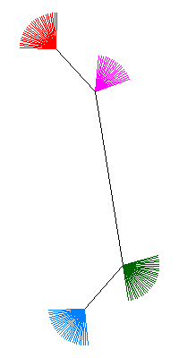

In the following, we demonstrate the phyclust+paml.baseml approach
to build a phylogeny for central/ancestral sequences. The phyclust
will identify clusters and centers of clusters, then followed by
paml.baseml to construct a tree by maximum likelihood.
The paml.baseml is a port from the baseml function
of PAML package. This two-stages approach
(phyclust+paml.baseml)
is particularly useful for large datasets, and potentially more efficient than
the single-stage approach using
paml.baseml on all sequences directly.
Note that the appropriate number of clusters and the best evolutionary model
for the phylogeny are required to be determined by either information criteria
or bootstrap.
Opening questions:
The following code will generate a tree which is close to the true.
This tree based on maximum likelihood approach is different to the last
figure in the
demo
example based on distance approach.
Note that PAML uses multifurcation at root for an unrooted tree as
the default value clock = 0.
|
|
 |
The colored branches are estimated by phyclust, and each
color represents a cluster characterized by a central sequences.
Using these four central sequences, the internal branches are constructed
and estimated by paml.baseml.
This is exactly the same topology where this toy data generated from
except the length of branches may not estimate accurately.
While the last
figure in the
demo
example based on distance approach gives the other illustration for the
same dataset.
|